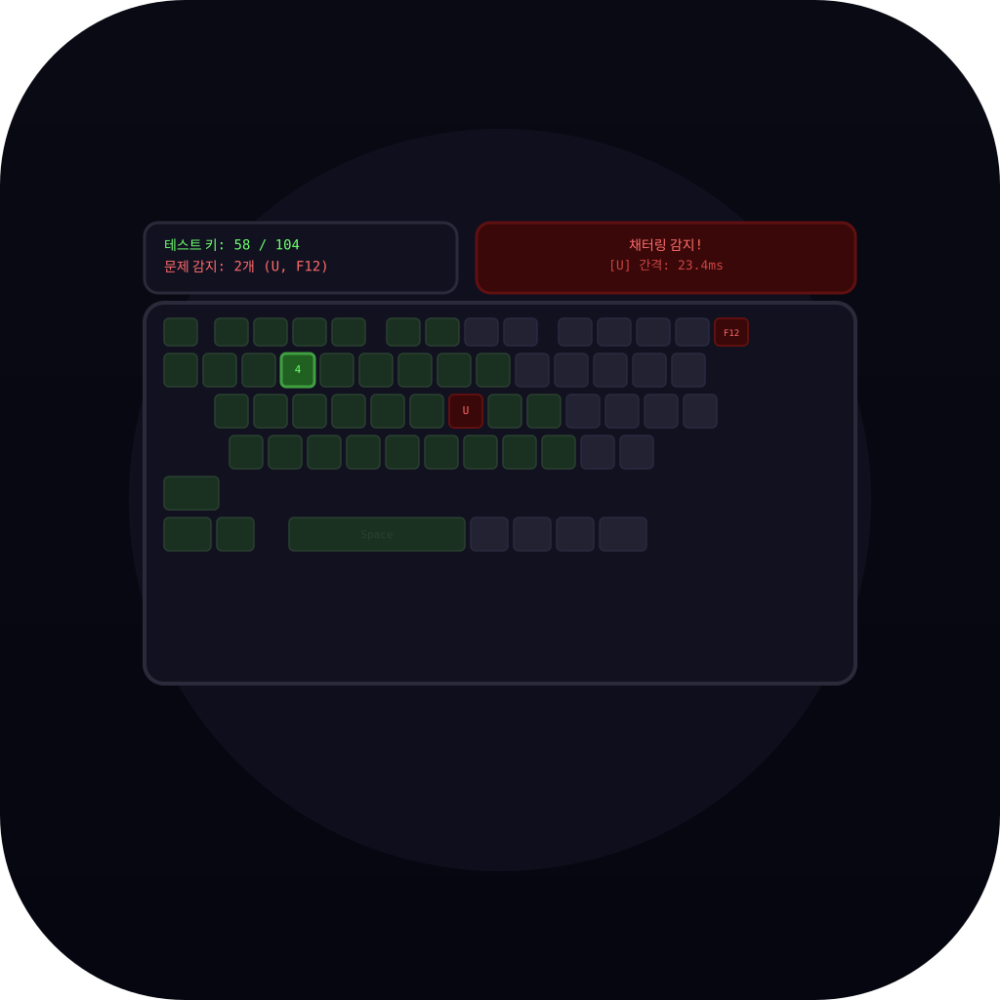
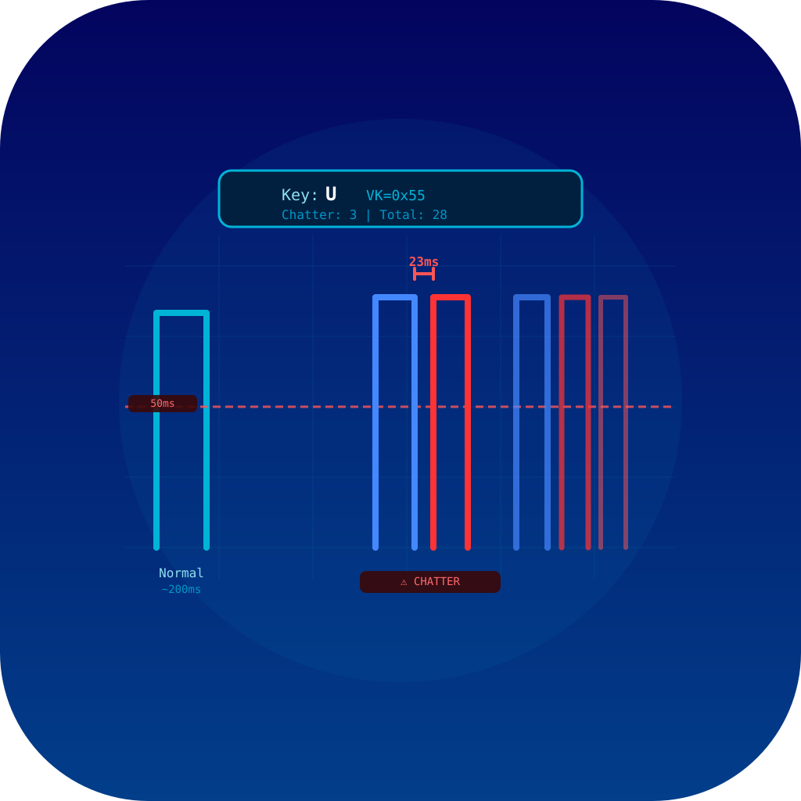

icon_01
literal
104키 레이아웃 + 진단 색상
구성: 공간/장면
ANSI 104키 레이아웃에서 초록(정상)/빨강(문제)/밝은초록(현재 누름)으로 진단 상태 표시
ANSI 104키 레이아웃에서 초록(정상)/빨강(문제)/밝은초록(현재 누름)으로 진단 상태 표시
icon_02
literal
채터링 파형 + 경고
구성: 레이어드
키 이벤트 타임라인에서 23ms 간격의 채터링 구간이 빨간색으로 강조된 진단 결과
키 이벤트 타임라인에서 23ms 간격의 채터링 구간이 빨간색으로 강조된 진단 결과
icon_03
청진기로 키보드 진단
구성: 중앙심볼
의사가 청진기로 진찰하듯 키보드 문제 키를 청진기로 진단하는 의료 은유
의사가 청진기로 진찰하듯 키보드 문제 키를 청진기로 진단하는 의료 은유

icon_04
50ms 임계 파형
구성: 기하학추상
오실로스코프 스타일 — 50ms 임계선 아래의 채터링 파형이 빨간색으로 경고됨
오실로스코프 스타일 — 50ms 임계선 아래의 채터링 파형이 빨간색으로 경고됨
icon_05
hybrid
진단 통과 — 104/104
구성: 대각선/동적
104키 전부 초록으로 테스트 완료 + 큰 초록 체크마크로 문제 없음 선언
104키 전부 초록으로 테스트 완료 + 큰 초록 체크마크로 문제 없음 선언